SPRINT：通过平均概率速度实现单步生成式推荐
SPRINT 研究如何在一次网络前向中预测物品的完整语义标识，同时保留推荐排序所需的物品一致性。论文由悉尼科技大学的 Zhuo Cai、Shoujin Wang、Min Xu、Fang Chen，与纽约大学阿布扎比分校的 Peilin Zhou、加州大学圣地亚哥分校的 Julian McAuley 合作完成，2026 年 9 月 28 日公开，是尚未经本轮独立复现实验验证的预印本。本文基于完整主文与附录讨论方法、八个数据集结果和成本边界。原始入口为 arXiv:2609.34306，访问核验日期为 2026 年 10 月 1 日；作者代码仓库已核验可访问，本轮未运行训练或性能复现。
自回归和非自回归生成式推荐通常都需要为每个物品执行多次网络前向，这对延迟敏感的推荐系统代价过高：能否只用一次前向生成一个物品？
1. 背景和问题
1.1 语义标识的速度瓶颈来自哪里
传统序列推荐把下一次交互预测为物品目录上的分类或匹配问题。语义标识式生成推荐则先把物品内容向量离散化，每个物品由几个来自不同码本的离散 token 共同指代，再根据用户历史生成下一物品的 token 序列。短标识把内容语义引入推荐预测，但也把物品输出改成了多个相关符号的组合。一个位置预测正确，并不保证其余位置与它对应同一件物品；即使所有位置的选择各自看起来合理，拼出的组合也可能不是用户想要的物品，甚至不在合法目录中。
以四个 token 的标识为例，自回归模型先预测第一位，再把第一位作为第二位的条件，最后逐步补齐余下位置。它用明确的条件依赖换取一致性，也引入串行前向和搜索开销。掩码扩散式推荐允许按任意顺序揭示位置，同一轮也可以预测多个位置，但获得较强准确率时，往往仍需把已经确定的 token 反馈给下一轮，让尚未确定的位置利用这些条件。于是，取消从左到右的顺序约束并不等于取消迭代。输出一份包含多个候选的列表时，束搜索和分支扩展还会放大计算量。
SPRINT 的目标是让网络同时产生各位置的分布，并把“哪些 token 合在一起构成用户偏好的物品”纳入训练。这样，单步预测才不只是把已有扩散模型少运行几轮。论文针对的是由历史交互预测下一物品的任务，主要实验使用小规模 Transformer，而不是直接把通用大语言模型部署为推荐代理。其贡献更接近推荐输出头与训练目标的重构：输入仍是离散化的历史物品，输出仍对应合法物品目录，变化发生在生成概率的参数化方式、负例监督以及物品整体打分上。
已有单步路线也存在各自的代价。RPG 用更长的标识提高并行预测的表达能力，论文讨论的长度为十六到六十四个 token，增加了嵌入与预测开销。OneGR 一次前向得到位置分数，却继续使用搜索选择完整标识。SPRINT 选择保留四个 token，通过物品级表示补偿并行位置预测丢失的关系。因此需要同时考察准确率、网络结构、目录搜索和物品向量维护，不能只凭前向次数就断言线上系统成本下降了多少。
1.2 单步解码丢失什么
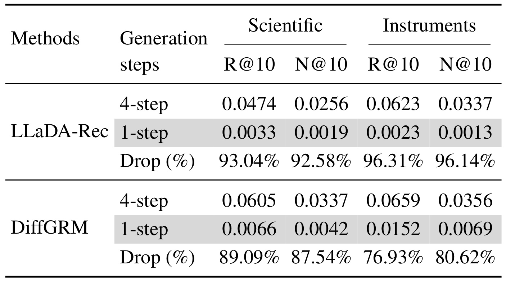
Table 1 比较 Scientific 和 Instruments 两个数据集上的 LLaDA-Rec 与 DiffGRM。每个物品仍由四个 token 表示，指标是全目录上的 Recall@10 与 NDCG@10。LLaDA-Rec 在 Scientific 上的 Recall 从四步的 0.0474 降为一步的 0.0033，相对下降 93.04%；Instruments 上则从 0.0623 降为 0.0023，相对下降 96.31%。DiffGRM 的下降幅度略小，但 Scientific 的 Recall 仍从 0.0605 降到 0.0066，Instruments 从 0.0659 降到 0.0152。这些数字是缩减已有模型生成步数的对照，不是 SPRINT 的结果，也不是在线点击率变化。它们说明，原有训练和解码过程形成的能力依赖多轮条件更新，直接截断迭代会损失大量推荐准确率。
表格保留了两个指标，因为召回到目标和把目标排在更前面是两个不同要求。四步到一步同时损害 Recall 和 NDCG，提示问题并非只在最后的列表顺序，而在物品组合的预测本身。灰色行是强制单步设置，不能读作精心训练的所有单步方法都会失败。SPRINT 正是重新安排训练目标，使一次输出从训练开始就承担完整物品预测任务。该对照支持“直接减少步数不够”的动机，但只覆盖两个数据集和两个掩码模型，不能被扩大为非自回归生成推荐的普遍不可能性结论。
从符号组合看，多轮过程允许一个位置的确定结果改变其他位置的条件分布；一次独立位置预测则缺少这条显式反馈路径。恢复一致性可以走两条路线：增加搜索，或者让训练阶段提前学习组合是否属于同一个有偏好的物品。本文选择后者，再以合法目录约束过滤无效组合。需要区分这两个作用：目录约束负责输出能映射到真实物品，物品级对比负责区分合法物品之间谁更符合用户历史。只约束合法性，不足以解释准确率为什么恢复；只预测位置概率，也不足以保证被组合的符号代表目标物品。
从推荐任务看，输出一个物品与输出一串符号的目标并不完全相同。推荐评价只关心真实目标是否进入列表及位置，而逐 token 交叉熵容易鼓励每个位置分别拟合热门码字；如果多个热门码字来自不同物品，它们的组合仍会偏离目标。本文使用负物品标识让模型看到完整候选之间的竞争，再通过联合表示判断这些符号一起出现的含义。这个问题对短标识尤其重要，因为用更长序列补充表达能力虽可能改善区分，也会增加参数、存储和评分成本。四 token 设置把这种张力放在一个紧凑输出空间里检验，并不是只追求减少解码轮数。
另一个需要澄清的关系是合法性与相关性。目录树可以限制输出落在存在的物品上，却无法单独决定哪个物品符合用户兴趣；语义相近的物品也可能有不同使用条件与交互偏好。SPRINT 因而保留用户历史输入，并用历史相关的整体表示参与竞争打分。该设计仍依赖交互监督，并没有通过语义编码就消除行为数据需求。评价它时，应同时看目录有效率、目标排序以及对新物品的适应，当前论文重点覆盖的是第二项。
平均速度为单步预测提供概率解释，双层对比则解决排序监督。连续空间的一步流模型通常依赖对状态求导的关系，而离散 token 无法直接使用同样的状态微分。论文因此从离散概率流出发，把需要学习的对象改写为每个位置的平均生成概率。这个理论结果解释了为何可以直接预测位置分布，但并不证明一个有限容量网络已经精确拟合真实后验，更不自动保证上线性能。准确率与速度仍要由具体编码、损失、负例、目录大小和实验协议检验。
2. 方法
2.1 SID 编码与离散概率路径
输入是按时间排序的用户交互历史，每个物品先通过内容嵌入和 OPQ 编码得到四个 token，每个位置有独立码本。主实验每个码本包含二百五十六个码字，历史最多保留二十件物品；进入历史编码器之前，每件物品的四个 token 映射为一个物品嵌入。OPQ 在不同子空间中并行量化，而残差量化产生粗到细的顺序依赖。论文选择前者，是让编码的关系结构与一次并行输出保持一致，并非声称 OPQ 在所有推荐解码器中都优于残差量化。
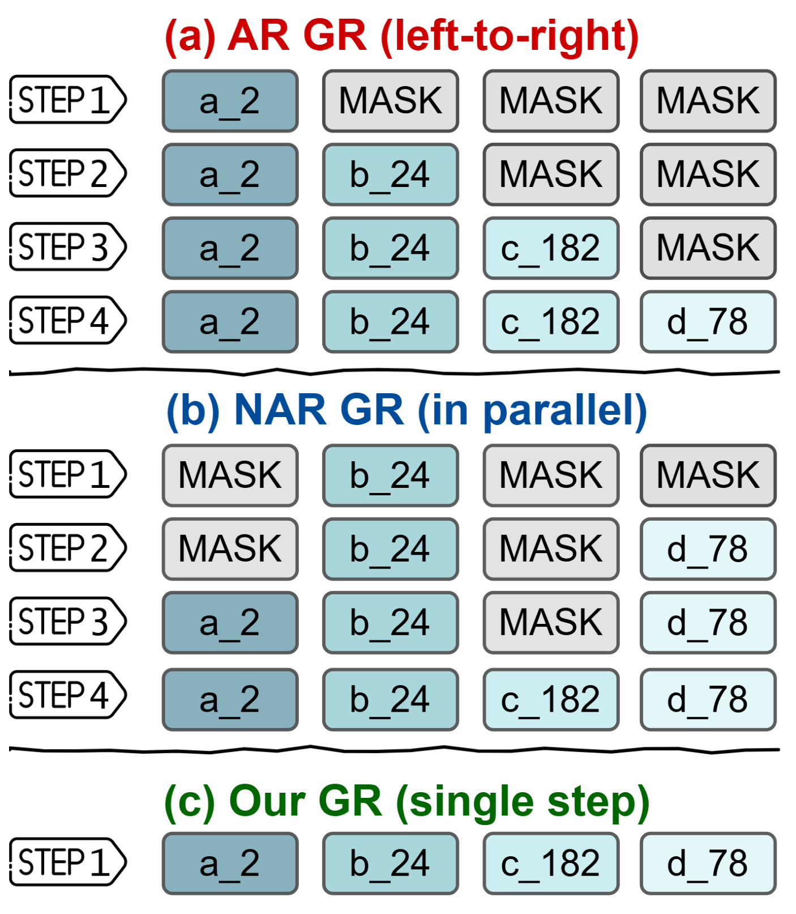
Figure 1 的三行展示四 token 标识的产生方式。红色自回归路径先给出第一位，后续每一轮把已生成的前缀作为条件，因此四个位置对应四次串行决策。蓝色非自回归路径可以先确定第二位，再确定第四位等，顺序更灵活，但已揭示 token 仍逐轮影响后续预测。绿色 SPRINT 路径在同一轮同时得到四个位置，不把刚预测的一位再送回网络生成下一位。图中相同颜色和下标表示同一个目标物品的各位置符号，灰色掩码表示尚未决定，图的重点是网络生成阶段的反馈次数，而不是整个服务链路只有一个操作。
这张结构图也帮助区分并行计算与概率独立。SPRINT 的双向解码器可以让多个查询在隐藏表示中共享历史信息，但位置输出仍以各码本上的分布形式呈现， token 级生成分数采用这些概率的乘积。于是共享网络状态没有消除输出分解所带来的组合问题，必须再引入整体物品表示。图中绿色的一步完整标识是目标输出的示意，真实推理不会把每一位最高概率 token 直接拼接后返回；模型会给合法的整条标识计算双层分数，并选择分数最高的物品。否则，逐位合理的符号仍可能组合出无效或不相关的标识。
四 token 的紧凑设计减少了相对于长标识并行方法的输出规模，但它依赖良好的内容嵌入和量化划分。一个码字可以被多个物品共享，这种共享有助于语义迁移，也可能造成物品区分不足。对应的整体表示将不同位置的嵌入串联，再由映射网络学习联合特征，试图在共享符号基础上恢复物品级差异。实际落地时，目录增删、量化码本更新、标识碰撞处理和物品向量重新计算都应纳入成本。结构图省去这些外围工作是为突出生成范式，并不能作为省去目录维护的证据。 离散路径的起点是全掩码序列，终点是训练样本下一物品的真实标识。对固定起终点，论文把条件路径按位置分解，再对端点耦合求和，得到边缘分布：
符号解释：$x$ 是长度为 $L$ 的标识，$x^l$ 是第 $l$ 位，$x_0$ 是全掩码起点，$x_1$ 是真实目标；$\pi$ 是端点耦合，$p_t$ 是时间 $t$ 的概率路径。这里的条件位置分解不等于全物品分布没有相关性，因为对目标物品的混合可以引入联合关系。具体每位的路径用掩码与目标 token 的凸组合表示：
符号解释：$\delta_y(x)$ 是两者相同时为一的指示函数；$\kappa_t$ 是目标符号的概率质量比例，$\dot\kappa_t$ 是随时间的变化率。例如线性调度下，每个位置以概率 $t$ 揭示目标，其余保持掩码。时间是构造训练状态的变量，不是用户交互发生的业务时间。
2.2 平均概率速度与一次预测
固定目标时，第 $l$ 个位置从当前状态 $z$ 向目标转移的条件速度写为：
符号解释：$\tau$ 为中间时间，$z^l$ 为当前 token。方括号从当前位置移走质量并向目标增加质量，前面的比例控制切换速率。附录通过 Kolmogorov 方程验证它能产生指定路径；对所有目标状态求和为零，对非对角转移的速率非负，满足连续时间马尔可夫链生成元的要求。这里移动的是概率质量，不能把“速度”理解成物品嵌入在欧氏空间中平移。 在区间 $[r,t]$ 上取时间平均：
符号解释：$r$ 为起始时间，$t$ 为结束时间，横线表示整个区间的平均。对于固定目标，运输方向不随时间变化，可以把积分化成标量：
符号解释：$\lambda_{r,t}$ 为区间平均切换速率。此式成立的关键是条件目标固定，方向项能移出积分；它并不允许把未知目标的边缘后验随便换成某个时刻的预测。接近终点时，分母中的剩余掩码概率趋近于零，$\lambda_{r,t}$ 会发散。作者明确说它只是推导中的中间量，训练和生成都不计算这个发散系数，实际学习下面的平均后验。
符号解释：$p_{1\mid\tau}$ 是给定中间状态时对最终 token 的后验，$\bar p$ 是按切换速率加权的区间平均，不是对所有时间等权求平均。附录先对未知目标求后验加权，再交换求和与积分，得到这个关系。理论将平均速度的学习转化为平均生成概率的预测，消除了部署时积分多步速度场的需求。网络近似的准确程度仍依赖训练目标和数据，推导没有给出有限样本下的推荐误差保证。
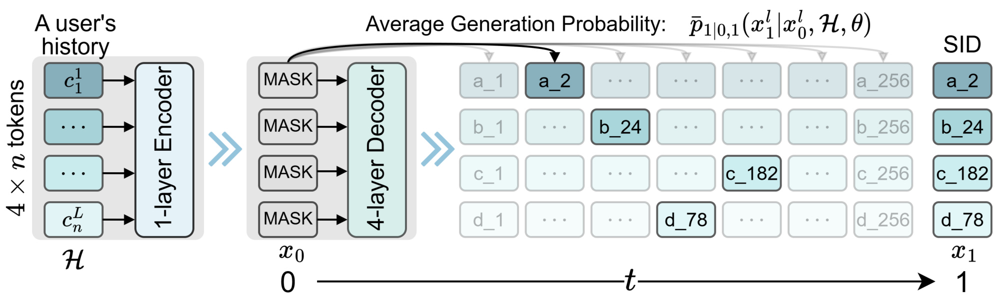
Figure 2 左侧是用户历史，经一层编码器生成可被查询的历史表示；中间四个掩码查询进入四层双向解码器，右侧每个位置输出其码本中所有候选符号的概率。图中第一位用不同深浅的候选框说明分布预测，而其余位置遵循同样机制。网络实际同时产生一个四乘二百五十六的概率表，不依次执行四次输出。下方时间轴从全掩码起点到目标标识说明平均概率的区间含义，不代表部署时真的经过轴上每个时间点。对四个位置执行一次前向，得到的是足以给完整物品候选计分的概率信息，而非四次独立采样组成最终推荐。
训练阶段终点固定为一，起点使用混合分布：一部分样本完全掩码，另一部分随机选起始时间，再按该时间揭示真实目标的若干位置。完全掩码样本与推理输入一致；部分揭示样本提供“已知道部分目标时补齐其余部分”的条件监督。这些目标片段只在训练时生成，推理不能访问用户下一物品的真实 token。图里右端写出的目标是训练监督或示例答案，不是用户历史编码器的额外输入。把这点理解错，会把训练噪声构造当成预测阶段的数据泄漏，或者错误地给线上网络喂入尚未发生的交互。
解码器的隐藏状态还进入下一节的用户侧整体映射，因而同一前向同时服务位置概率和物品级联合评分。历史长度二十件是主实验的上限，图中较长的符号串是离散标识表示，并不意味着每个 token 都独立作为一件历史物品进入编码器。轻量结构有利于推理，但没有长历史、上下文动态变化或大型候选集上的完整部署实验。图和理论一起支撑“网络能一次给出各位置分布”的机制，端到端开销仍包括合法目录遍历、物品表示矩阵乘、分数归一化和返回列表，因此一次前向与常数时间推荐不是同一个结论。 训练起点混合可以明确写成：
符号解释：$\rho$ 为完全掩码样本比例；$\delta_0$ 表示起点固定为零，$\mathcal U$ 为均匀分布。$\rho$ 越大，训练越强调实际推理的输入；它也减少补齐部分标识的辅助监督。论文不在推理时使用可变区间或多步更新，因而该理论的更一般区间只在训练构造与后续扩展中有意义。
2.3 双层流对比训练与合法物品打分
只最大化真实目标各位置的概率，可以使用普通 token 交叉熵：
符号解释：$H$ 为用户历史，$\theta$ 为网络参数，$x_r$ 为训练起点状态。该目标没有在同一次监督中明确比较其他完整物品，也无法单独表达多个位置组合的偏好。论文先把位置概率乘积变为物品级对比，令 $a(c)$ 为一个候选标识的 token 分数：
符号解释：$\mathcal S$ 包含目标与随机采样的 $N$ 个未交互物品标识，$c^l$ 是候选的第 $l$ 位。求和对数等价于取位置概率乘积，但对比归一化发生在完整候选标识之间，因此训练会关注竞争物品而不仅是提高正例 token 的绝对概率。未交互物品不一定是真正不喜欢的物品，采样负例仍有曝光偏差和假负例风险。 为学习位置组合，再定义整体表示：
符号解释：$h_l$ 是解码器各位置隐藏状态，$e_{c^l}$ 是物品 token 嵌入；$\operatorname{Cat}$ 表示串联，MLP 为映射网络，论文以尖括号表示余弦相似度。$u$ 取决于用户历史与预测状态，$v_c$ 只取决于候选物品，能够离线预计算并复用。物品级项并没有把位置输出改成自回归分布，而是增加一条联合组合的评分渠道，学习哪些共同出现的符号代表同一件合适物品。
符号解释：$D$ 为历史与目标组成的训练集。两项分别学习细粒度 token 区分和完整物品匹配，原文没有额外手工权重；删除任一项会同时改变相应推理分数，这也是解读消融时必须注意的实验设置。 推理时完全掩码，合法标识集合记为 $\mathcal T$。一次前向给出 $a_0(c)$ 和用户表示，最终分数为：
符号解释：$a_0$ 使用全掩码起点的概率，$d$ 遍历合法目录，两个 softmax 分别在同一集合归一化，再相加。两项各自归一化后相加，与把原始对数概率和余弦分数先相加再做一次 softmax 并不等价。 前缀树约束使标识对应真实物品，但评分仍涉及完整候选集合。物品向量可缓存，不等于矩阵乘和全目录排序免费；大规模目录可能需要先召回一组候选，再运行这个评分过程，而该缩小目录的效果尚未在本文被完整评估。
3. 实验结果
3.1 数据、指标和比较协议
论文评估八个数据集：Amazon Reviews 2014 的 Sports、Beauty、Toys，Amazon Reviews 2023 的 Scientific、Instruments、Games、Arts，以及 Yelp。物品数从 Toys 的 11,924 到 Arts 的 89,959，用户数从 Toys 的 19,412 到 Arts 的 197,287；平均历史长度约八到十件。每位用户按时间排序，最后一次交互作测试，倒数第二次作验证，其余训练。这是逐用户留一划分，不能等同于所有用户共同遵守某个全局时间截止点。若用于生产复现，还应核查内容嵌入、量化器和目录在训练时究竟可见哪些物品，尤其是测试时间才出现的新物品。
评价使用全物品目录的 Recall 和 NDCG，主文报告截断五的结果，附录补充截断十和更长列表；并非只在少量随机负例中评价。作者五个随机种子取平均，表格以配对检验标示相对第二名的显著性，阈值小于百分之五。公开表没有同时展示逐种子方差或完整置信区间，因此可确认作者报告了统计检验，不能独立核算检验过程。本轮读取论文与代码入口，没有运行这些数据集，以下数值均为原文实验报告。
内容编码统一采用 sentence-t5-base，训练、验证、测试批量分别为一千零二十四、二百五十六、二百五十六。主结构是一层编码器和四层解码器，模型参数约五百五十九万；默认嵌入维度二百五十六，Yelp 和 Arts 扩大到五百一十二。训练最多一百五十轮，按验证指标的加权组合早停。效率对比统一历史长度、批量以及适用时的束宽十，但准确率对比允许基线遵循各自原论文的调优设置，因此“速度测试的同配置”与“准确率最优配置”不是完全相同的比较面。
3.2 全目录推荐准确率
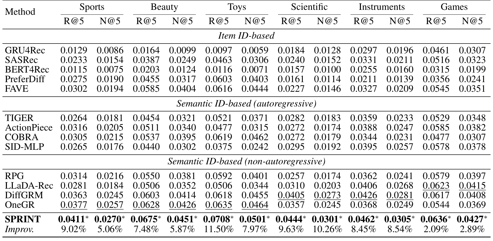
Table 2 将传统物品编号方法、自回归语义标识方法和非自回归语义标识方法分组，便于观察 SPRINT 与不同范式的差距。Sports 的 Recall@5 为 0.0411，第二名 OneGR 为 0.0377，相对增加 9.02%，绝对差为 0.0034；对应 NDCG@5 从第二名的 0.0257 到 0.0270，相对增加 5.06%。Toys 的 Recall 从 0.0635 到 0.0708，相对增加 11.50%，是该表该指标的较大增幅。Scientific 的 NDCG 从 0.0273 到 0.0301，相对增加 10.26%。Games 则更接近强基线，Recall 从 0.0623 到 0.0636，只增加 2.09%。不同数据集的增益幅度差异明显，因此不宜把最优任务的幅度代表全部任务。
表中的第二名会随数据集和指标改变，有时是 OneGR，有时是 DiffGRM 或 LLaDA-Rec。摘要中的平均 7.77% 是跨数据集与指标相对第二优结果的平均，不是相对同一个固定模型，也不是命中率增加七点七七个百分点。表中星号对应作者声称的配对检验通过，五次随机种子平均体现了一定稳定性，但没有标准差供本轮独立判断误差条。对实际推荐系统，几个百分点的相对离线增益可能有价值，也可能因目录、时序划分和曝光分布变化而减弱，必须留到自己的数据和在线实验核验。
值得注意的是，SPRINT 同时使用内容量化、轻量网络、负例监督和物品整体评分，而基线的输出结构各异。主结果证明整套配置在这些基准上有效，不能把所有提升只归因于平均概率速度的理论推导。物品级表示提供了一条与常见双塔或序列匹配模型相近的渠道，消融表显示它影响很大。若评估生成范式的独立贡献，应继续比较相同编码和容量下的普通并行预测、双层对比以及不同推理评分；只将本文完整模型与逐 token 模型比较，仍混合了多个变化因素。
附录 Table 8 的截断十结果也保持领先：Sports Recall@10 为 0.0621，Toys 为 0.0998，Scientific 为 0.0656；相对第二名的增幅分别为 8.19%、14.19%、8.43%。Figure 8 将截断扩大到二十、五十、一百、一千，作者报告对所选生成推荐基线仍保持优势。这说明效果不只集中在很短列表，但比较的是同一套离线目录，不是线上千候选召回之后的多目标重排，也未覆盖库存、价格、广告约束和列表多样性。
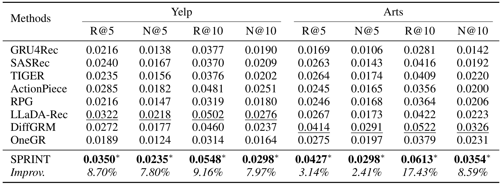
Table 12 补上六个主数据集以外的 Yelp 和 Arts，覆盖两个截断和两种指标。Yelp 的 Recall@5 为 0.0350，第二名 LLaDA-Rec 为 0.0322，相对增加 8.70%；NDCG@5 从 0.0218 到 0.0235，相对增加 7.80%。Arts 的 Recall@5 为 0.0427，第二名 DiffGRM 为 0.0414，相对增加 3.14%；NDCG@5 从 0.0291 到 0.0298，仅增加 2.41%。同一个 Arts 数据集在 Recall@10 上从 0.0522 到 0.0613，相对增加 17.43%。这组差异意味着短列表顶端收益与较长列表覆盖收益并不完全一致，平均数会隐藏具体业务关心的截断差别。
Arts 的物品目录明显更大，约九万件，训练负例数也从其他任务的一百提高到一千，因此它不是在完全相同训练预算下给出的规模泛化实验。Yelp 与电商评论的内容、行为语义不同，结果为跨领域适用性提供证据，但每个领域仍独立训练，不是一个模型无需适配地跨领域推荐。表格里的星号仍是作者报告的配对检验，本轮没有完整重跑或检验原始输出。读取这些补充结果时，应同时记住数据变化和超参数变化，避免把多数据集领先描述成无成本迁移。
这张表让摘要中“八个数据集”的范围可见，也提醒读者不要只看主文六个任务就认为已经检查全部结果。八个数据集都属于离线历史交互推荐，没有在线点击、转化、留存或多目标收益报告。更大的目录和更长列表有所覆盖，但规模仍远小于工业全量目录。若模型用于排序阶段，可以先在既有候选集内比较召回与排序质量；若用于端到端召回，需要额外研究在巨大目录里计算双层分数的复杂度。该表证明补充两个公开数据集的离线有效性，而不是完成了工业部署验证。物品规模变化与负例预算变化同时发生，也使它无法单独回答扩大目录后的纯规模效应。
3.3 生成时间与效率基线
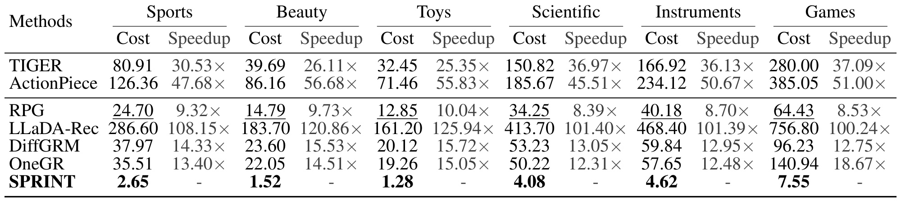
Table 3 的单位是秒，统计整个测试集生成推荐的总时间。SPRINT 在 Sports、Beauty、Toys、Scientific、Instruments、Games 上分别为 2.65、1.52、1.28、4.08、4.62、7.55 秒。对应比较组中第二快的是 RPG，其 Scientific 用时 34.25 秒，除以 4.08 得到 8.39 倍；Toys 用时 12.85 秒，除以 1.28 得到 10.04 倍。这正是摘要中的八点三九到十点零四倍范围，基线集合是表中主要准确率导向的自回归和非自回归模型，不能不加限定地称为相对所有高效推荐实现的增益。
TIGER 在 Sports 为 80.91 秒，SPRINT 为 2.65 秒，二者相差约三十点五三倍；ActionPiece 和多轮掩码模型的差距还可能更大。这些差距由网络前向、输出标识长度、束搜索及具体实现共同决定。SPRINT 去掉逐位置反复运行网络，是显著优势；但 RPG 本来也有并行生成，因此和 RPG 的差距还包含标识长度与轻量结构等因素。不能从四步变一步简单推算出四倍，然后把剩余差距解释为某一个数学量的独立加速，更不能把整个测试集秒数当成线上每次请求秒数。
论文统一效率测试的批量、历史长度和适用时的束宽，却没有在这张表中提供每个服务组件的细粒度分解。物品整体向量的预计算是否计入、目录缓存是否热、数据传输是否覆盖，都需要代码和计时脚本确认。线上通常关心单请求尾延迟、吞吐、并发、显存及召回到排序全链路成本；全测试集批量时间只能回答其中一部分。表格因此支持在论文实验环境下的离线生成效率改善，同时保留后续在固定硬件和固定准确率下复现的必要性。论文报告的性能可作为目标，尚不能当作已经在当前环境测得的指标。复现还应保留计时前的缓存状态和设备信息，以便判断能否重现相同的相对速度。
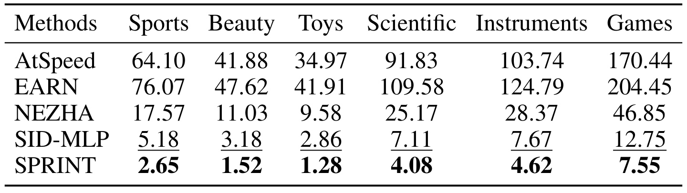
Table 10 将 AtSpeed、EARN、NEZHA 和 SID-MLP 纳入另一组比较，均以 TIGER 为相关骨干。这里最接近 SPRINT 的是 SID-MLP，而不是主文 Table 3 的 RPG。Sports 上 SID-MLP 需要 5.18 秒，SPRINT 需要 2.65 秒，实际比值约为 1.95；Toys 是 2.86 对 1.28 秒，约为 2.23；Instruments 是 7.67 对 4.62 秒，约为 1.66。六个数据集的最接近高效基线加速范围约为一点六六到二点二三倍。因此，完整结论应当同时保留两组比较：对主文准确率导向生成基线快八到十倍，对附录最接近的效率导向 SID-MLP 则快约一点七到二点二倍。
AtSpeed 的投机生成仍包含草稿与验证，EARN 压缩历史计算却保留主要串行解码，NEZHA 通过轻量草稿头和有效标识验证缓解步骤代价。它们与 SPRINT 的输出方式不同，远大于 SID-MLP 的速度差距不能都归因于参数量。SID-MLP 已把较容易预测的后续 token 转移给轻量映射，因此是更有解释力的效率对照。SPRINT 依然领先，并且主准确率表中优于它，但这不表示两者处于完全相同的训练、蒸馏和模型容量成本下，部署选择还要比较全生命周期预算。
摘要里的八到十倍不能泛化成相对最强效率基线的加速，表内秒数也不能解释为单用户线上延迟。 这条边界影响工程预期：若现有系统已经使用高效蒸馏头，预期收益应参考附录较小的增幅；若仍依赖重型逐 token 解码，主文比较更相关。即便网络只有一次前向，整个合法目录的联合评分随物品数增长，论文自己的限制章节也建议把当前形式放在候选已召回的排序阶段。要迁移到亿级物品召回，尚需分层检索或近似评分，以及这些近似导致的质量变化评估。若仅替换网络却沿用不同目录遍历策略，测得的增幅就会混入搜索实现差异，难以解释方法本身的收益。
3.4 编码器与双层损失消融
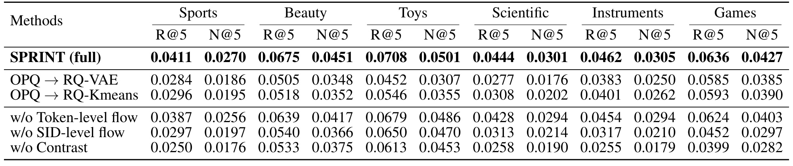
Table 4 首先固定完整模型，分别将 OPQ 改成 RQ-VAE 或 RQ-Kmeans。Sports 的 Recall@5 从 0.0411 降到 0.0284 或 0.0296；Toys 从 0.0708 降到 0.0452 或 0.0546。不同子空间的并行编码更符合本文的同时预测，而残差编码的粗细依赖容易与这个输出方式不匹配。这个解释具有实验支持，但不是量化器优劣的全局排序：附录把 TIGER 的 RQ-VAE 换成 OPQ 时，六个数据集都出现下降，例如 Sports Recall@5 从 0.0264 到 0.0220。量化器与解码范式需要共同设计，不能脱离生成条件讨论哪个标识更好。
删除 token 级项时，Sports Recall 降到 0.0387，仍接近完整模型；删除 SID 级项则降到 0.0297。Games 的变化更明显，完整模型 0.0636，删除 token 项为 0.0624，删除 SID 项为 0.0452。物品整体通道能表达四个符号组成一个用户偏好物品的关系，因此贡献较大，符合论文恢复组合一致性的动机。但“删除 SID 级项”同时删除训练目标和推理分数，不能只解释成训练监督的纯因果效应。若想区分学习联合表示与推理融合各自的作用，还应补充只移除训练项、只移除预测项的受控实验。
最后一行去掉对比，回到正例 token 交叉熵。Sports Recall 降到 0.0250，Scientific 降到 0.0258，说明排除竞争物品的监督和联合结构对排序都重要。该消融同时丢失负例区分和整体物品通道，不能把全幅下降全部算作某一种负例采样的功劳。随机未交互负例还可能包含用户尚未看到但实际上感兴趣的物品，论文没有对曝光纠偏、热门偏置或难负例构造做完整实验。对于线上迁移，保留对比结构后仍需检查负例定义是否与曝光和业务目标一致，尤其是候选集合受上游策略选择时。
架构对照也提供一个反例。附录 Table 13 的四层 decoder-only 在 Toys 和 Instruments 上略优于默认 encoder-decoder，例如 Toys Recall@5 从 0.0708 到 0.0739，Instruments 从 0.0462 到 0.0482。说明主体机制不只依赖一个固定骨干，但不能说编码器加解码器在所有任务更强。本文最值得保留的实验结论是编码结构、整体评分和负例监督的互相配合，而不是一个统一网络层数配方。
3.5 全掩码比例与负例数
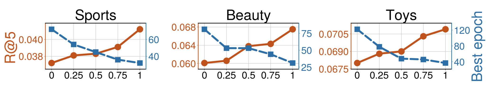
Figure 6 展示 Sports、Beauty、Toys 的附录分析，横轴为全掩码训练比例，橙线使用左轴 Recall@5，蓝色虚线使用右轴达到最优验证表现的训练轮数。在主文 Figure 3 的对应实验中，Scientific 和 Instruments 的准确率在约四分之三处达到较优水平，完全掩码时略低；Games 则在比例为一时继续提高。蓝线总体随比例提高而下降，意味着减少训练时与推理输入不一致的样本，通常能更快达到最佳表现。图中右轴是轮数，不是每轮秒数，更不是某个固定在线请求的延迟；两个坐标轴的量纲不同，不能用线的交点解释成本平衡。
方法上，部分揭示样本给出已有目标 token 的条件监督，有助于学习内部关系，但推理始终从全掩码开始。比例过低时，训练可能把大量能力投入于“知道答案一部分再补齐”的较容易任务，无法充分服务真正的全掩码推荐；比例较高则让训练集中于实际部署输入。Scientific 与 Instruments 仍保留少量部分揭示样本更好，说明辅助条件监督并非完全无用。论文搜索零、四分之一、二分之一、四分之三和一五个档位，结果是在这个有限网格中的选择，不保证连续比例的精确最优点。
附录在 Sports、Beauty、Toys 上观察到比例为一较优，主超参数表相应采用完全掩码，而 Scientific 和 Instruments 为四分之三。这些设置提醒复现者不能直接把某个任务的最优比例套到所有目录。理论提供一般区间的解释，实际最优训练却大多靠近全掩码端点，因此平均速度的泛化区间到底贡献多少仍值得分离检验。应比较相同网络和双层损失下的纯全掩码预测、混合起点预测，以及不采用平均速度解释的普通并行预测，确认额外监督带来的稳定增益，而不是仅凭公式把一般流过程的能力都归给当前模型。
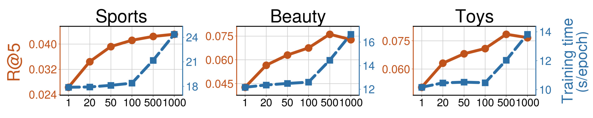
Figure 7 展示 Sports、Beauty、Toys 的附录负例数分析，与主文 Scientific、Instruments、Games 上的 Figure 4 相互印证。横轴为每个正例采样的负物品标识数，橙线是 Recall@5，蓝色虚线是单轮训练时间。三个主图任务从很少负例增加到一百时，准确率明显提升，而训练时间变化较小；继续增加到五百或一千时，准确率增幅趋缓，单轮时间上升更快。这个形状与双层对比目标的计算结构一致：网络一次生成位置分布，但仍需为每个采样候选计算 token 组合分数和整体表示分数，候选越多，对比分母覆盖越广，评分开销也越大。图表并未说明所有负例规模都几乎免费。
主实验默认一百个负例，Arts 使用一千个，说明作者已经按目录差异调整监督强度。附录 Sports、Beauty、Toys 的曲线显示，超过一百后 Sports 仍缓慢增长，Beauty 和 Toys 在五百附近较好，继续到一千略降。负例更多不等于更好：可能出现更多假负例、重复语义候选和优化噪声，也可能只是收益不足以覆盖成本。图只显示随机负例的结果，不能据此判断按曝光采样、同类难负例或在线反事实负例的最优数量。
对复现而言，应同时记录准确率与总训练预算。把负例数调大虽然可能提高最终 Recall，却增加单轮成本，而且最优轮数还可能改变；应比较达到相同准确率所用时间或固定总时间内的质量。另一层区别是训练的采样集合与推理的合法全目录集合：训练对比分母只覆盖正例和采样负例，推理归一化遍历完整目录。负例规模决定训练信号，不直接决定部署候选规模，也不能把图中的一百解释成线上模型只看一百件物品。如何减少这两种归一化之间的差异，是在大目录和策略曝光环境中值得继续验证的问题。
3.6 训练耗时和收敛
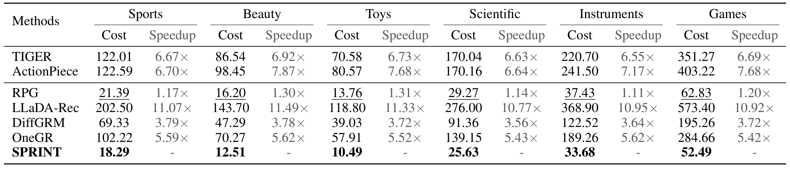
Table 9 报告单轮训练秒数，SPRINT 在 Sports 为 18.29 秒，RPG 为 21.39 秒，对应 1.17 倍；Toys 为 10.49 对 13.76 秒，约 1.31 倍；Instruments 为 33.68 对 37.43 秒，约 1.11 倍。相对自回归 TIGER 的逐轮训练差距更大，例如 Sports 为 122.01 对 18.29 秒，约 6.67 倍。这个表与生成时间表的倍数明显不同，说明训练并不是把推理速度简单倒过来。训练的并行化方式、目标计算、负例规模和网络结构共同决定成本，单步部署不会自动让训练达到相同加速。
尤其不能把每轮省下的秒数直接称为总训练成本降低多少。完整成本还包括需要多少轮达到目标、早停等待、数据预处理、语义编码、量化码本训练、超参数搜索，以及离线物品表示计算。本文配置最多一百五十轮、早停耐心十轮，最优轮数随全掩码比例变化；一个较快的 epoch 若需要更多 epoch，未必总预算更低。表中训练与测试批量统一，便于实验环境内横向比较，但没有为全部方法报告固定推荐质量下的完整训练总时间。
表格中 RPG 是最接近的逐轮训练基线，其优势仅为约一成到三成；比它更慢的模型可能有更长标识或额外调度。SPRINT 结构紧凑，没有复杂掩码调度或数据增强，也不需要在部署时多轮反馈，这些特点值得工程关注。然而，系统若已经缓存编码结果或把训练损失做高效融合，实际增幅可能不同。由于本轮没有在相同硬件运行代码，这些秒数是论文报告而非独立测量。训练效率与推理效率应该分别复现，再用实际请求量和更新频率判断哪一部分更影响整体成本。频繁更新目录的应用，还应把码本与物品向量重新计算纳入训练后的维护预算，不能仅比较网络优化这一个阶段。
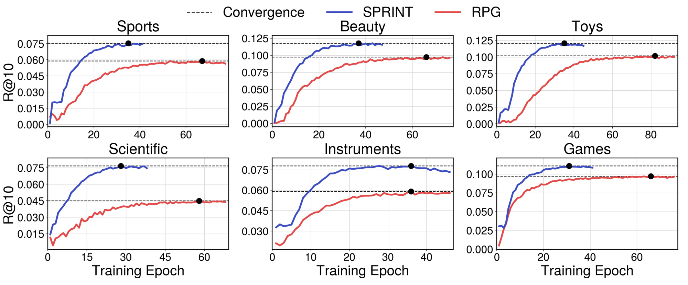
Figure 5 的六个子图以训练轮数为横轴、Recall@10 为纵轴，蓝色为 SPRINT，红色为 RPG，黑点和水平虚线标示收敛附近的结果。Sports、Beauty、Toys 上蓝线更早达到较高平台，Scientific 和 Instruments 上最终差距也较明显；Games 两条曲线相对接近。作者概括 SPRINT 通常二十到四十轮收敛，这与一轮训练较便宜的表格相互补充，支持训练过程可能更高效。但从曲线读数得到的是大致位置，不应写成未经表格报告的精确时间或统一轮数。
横轴是 epoch 而不是累计秒数，所以不同模型的线不能直接转换成同一墙钟成本。将曲线与 Table 9 的每轮时间结合，可以估计特定实验中达到某个指标的时间，但仍需要确定作者画的是训练期间哪一种评估结果、评估成本是否计入，以及黑点对应最优点还是停止点。不同模型的最终质量不同，也不能只比较各自达到平台的时间就宣布同质量成本差多少。更严格的分析应选一个共同的 Recall 或 NDCG 门槛，再报告达到门槛的实际累计用时和随机种子波动。
曲线还帮助定位机制：双层目标直接比较目标物品与竞争标识，避免仅优化各位置正例概率，在较早阶段就能形成较好的物品排序；较大的全掩码比例使训练与推理一致，也可能加快提升。这是结合方法与实验的解释，不是被单独隔离验证的因果贡献。若要验证，需在同一网络下分别移除联合评分、改变负例数和起点混合，观察质量随时间的完整轨迹。论文目前的收敛比较主要选 RPG，并未展示所有准确率或效率基线的完整训练成本，因此结论应限定在所画的对照和公开设置。
4. 总结
4.1 可以迁移的机制
SPRINT 的可取之处在于把紧凑标识的一次并行预测与物品整体偏好监督连在一起。平均概率速度给出从离散概率流到位置后验预测的推导，双层对比则让模型既区分符号，又识别完整物品组合。对已有生成推荐系统，先检查串行前向与候选搜索分别占多少时间，再决定是否值得替换输出范式。若目录已有高效召回，本文更适合尝试候选集合内的细粒度排序；若目标是直接覆盖巨大目录，则必须先解决合法标识评分随目录增长的问题。
对大模型个性化应用，借鉴点是结构化输出一致性，而非把这个小型推荐器直接看成语言模型替代品。RAG 或工具推荐也可能输出多个共同指代某对象的符号，独立位置准确率并不保证组合正确；在有明确候选集合时，可以同时学习局部概率与整体对象匹配，再受合法对象约束输出。该迁移只是方法启发，本文没有自然语言推理、检索增强生成或代理工具选择的实验。只在标签空间和候选评分可明确构建的任务上考虑这条路线，才能保留原方法的监督条件。
4.2 局限与后续实验
第一，推理遍历合法标识并进行整体物品匹配，成本仍随目录增大，离线预计算无法取消请求侧的矩阵乘和排序。作者明确指出当前形式更适合已召回候选的排序阶段，未验证亿级目录端到端检索。第二，八个数据集使用逐用户时间留一，未建立全局时序隔离，也没有冷启动物品和目录新增过程的完整分析；量化和内容编码可见性要另行核查。第三，公开实验是离线 Recall 与 NDCG，没有线上点击、转化和多目标列表效果，不能直接外推商业收益。第四，双层损失消融同时改变训练和推理，平均速度推导、联合评分与普通并行预测的独立贡献仍需更细控制。第五，速度比较依赖基线集合、统一配置和预计算口径，相对最快效率基线的增幅显著小于摘要的主文增幅。
后续首先复现相同 OPQ、网络容量和负例预算下的普通并行预测、仅 token 对比和完整双层模型，并把训练项与推理融合分开消融，确认实际提升来自哪里。其次固定服务硬件和推荐质量，测量预计算、网络前向、目录评分、归一化与 top-K 的分项成本，报告不同候选规模和并发下的尾延迟；同时加入 SID-MLP 对照，避免只选慢的多步模型放大收益。第三，在全局时间切分和物品动态新增条件下训练量化器，比较旧码本编码新物品、重训码本和物品向量更新的质量与维护成本。第四，围绕候选集合变小后的两个 softmax，检查分数校准与列表质量是否稳定，并评估曝光相关负例和假负例对联合匹配的影响。
理论中一般区间的平均速度还可以探索少步推理，但当前实现固定终点、主要从全掩码起点学习，没有验证可调多步方案。与其仅增加区间或扩大负例数，更有价值的是用明确成本预算考察条件监督、联合物品评分和目录搜索之间的分工。本文已经提供较完整的离线结果与附录对照，下一步应以受控复现和服务分项计时确认它在具体推荐链路中的适用范围。